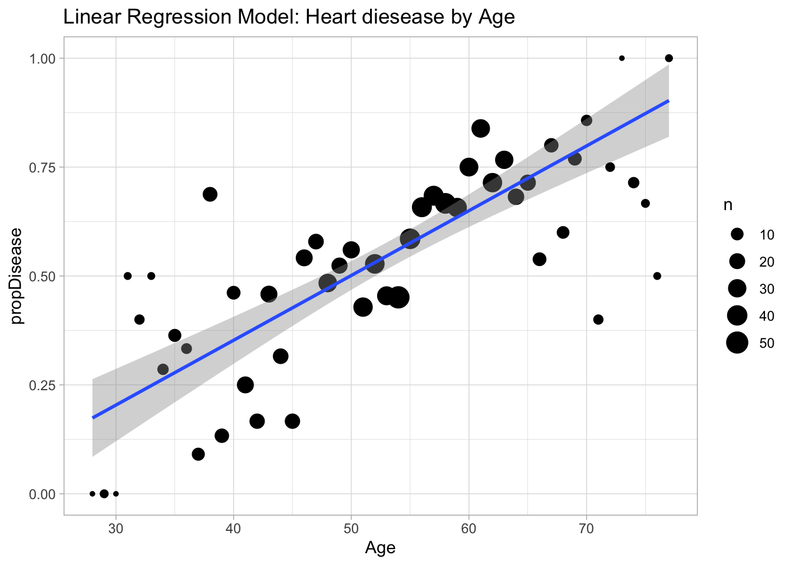
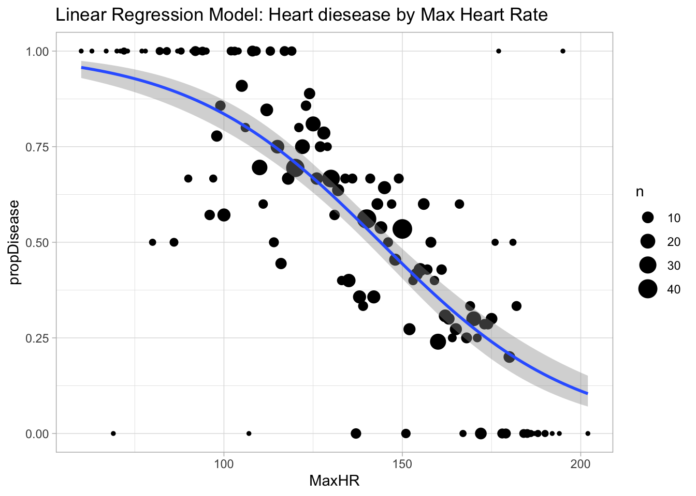
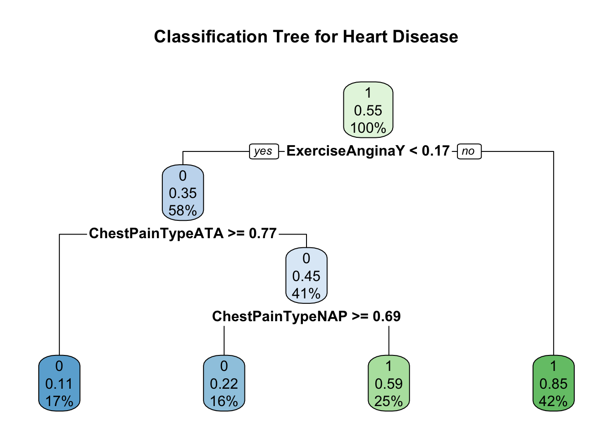

library(readr)
library(tidyr)
library(dplyr)
library(tidyverse)
library(ggplot2)
library(GGally)
library(class)
library(caret)
library(randomForest)
library(tree)
library(rpart.plot)
library(gbm)ST558: Homework 5 - Fitting Models
Task 1: Conceptual Questions
- What is the purpose of using cross-validation when fitting a random forest model?
- To choose the tuning parameter and split the data.
- Describe the bagged tree algorithm.
- Bagging is a general method of bootstrap aggregation which gets multiple samples to fit on resample from the data or a fitted model.
- What is meant by a general linear model?
- A general linear model is using a continuous response variable, but allows for both continuous and categorical predictor variables.
- When fitting a multiple linear regression model, what does adding an interaction term do? That is, what does it allow the model to do differently as compared to when it is not included in the model?
- Adding interactions terms adds more explanatory variables to the model. This could describe the data more and allow for a model with a better fit or it could over fit the model. It allows the model to extend from a simple to a multiple linear regression.
- Why do we split our data into a training and test set?
- We split the data to train the model based on the training set, and then actually test the prediction of the model on the test set.
Task 2: Fitting Models
This report will be using a Heart Failure Prediction Data set that was created by combining 5 heart data sets with 12 variables. The five data sets used are:
Cleveland: 303 observations
Hungarian: 294 observations
Switzerland: 123 observations
Long Beach VA: 200 observations
Stalog (Heart) Data Set: 270 observations
Total: 1190 observations - Duplicated: 272 observations = Final data set: 918 observations
Quick EDA/Data Preparation
Load libraries necessary for this analysis.
Read in the data as a tibble and display a few rows.
heart_tb <- as_tibble(read_csv("heart.csv", show_col_types = FALSE))
#display a few rows of the data
head(heart_tb)# A tibble: 6 × 12
Age Sex ChestPainType RestingBP Cholesterol FastingBS RestingECG MaxHR
<dbl> <chr> <chr> <dbl> <dbl> <dbl> <chr> <dbl>
1 40 M ATA 140 289 0 Normal 172
2 49 F NAP 160 180 0 Normal 156
3 37 M ATA 130 283 0 ST 98
4 48 F ASY 138 214 0 Normal 108
5 54 M NAP 150 195 0 Normal 122
6 39 M NAP 120 339 0 Normal 170
# ℹ 4 more variables: ExerciseAngina <chr>, Oldpeak <dbl>, ST_Slope <chr>,
# HeartDisease <dbl>- Quickly understand your data. Check on missingness and summarize the data, especially with respect to the relationships of the variables to HeartDisease.
#Determine if there is any missing data in any column
colSums(is.na(heart_tb)) Age Sex ChestPainType RestingBP Cholesterol
0 0 0 0 0
FastingBS RestingECG MaxHR ExerciseAngina Oldpeak
0 0 0 0 0
ST_Slope HeartDisease
0 0 #View a basic data validation summary table
psych::describe(heart_tb, skew = FALSE, omit = TRUE) vars n mean sd median min max range se
Age 1 918 53.51 9.43 54.0 28.0 77.0 49.0 0.31
RestingBP 4 918 132.40 18.51 130.0 0.0 200.0 200.0 0.61
Cholesterol 5 918 198.80 109.38 223.0 0.0 603.0 603.0 3.61
FastingBS 6 918 0.23 0.42 0.0 0.0 1.0 1.0 0.01
MaxHR 8 918 136.81 25.46 138.0 60.0 202.0 142.0 0.84
Oldpeak 10 918 0.89 1.07 0.6 -2.6 6.2 8.8 0.04
HeartDisease 12 918 0.55 0.50 1.0 0.0 1.0 1.0 0.02#Review the rows with 0 values
heart_tb |>
filter(Cholesterol == 0 | RestingBP == 0)# A tibble: 172 × 12
Age Sex ChestPainType RestingBP Cholesterol FastingBS RestingECG MaxHR
<dbl> <chr> <chr> <dbl> <dbl> <dbl> <chr> <dbl>
1 65 M ASY 115 0 0 Normal 93
2 32 M TA 95 0 1 Normal 127
3 61 M ASY 105 0 1 Normal 110
4 50 M ASY 145 0 1 Normal 139
5 57 M ASY 110 0 1 ST 131
6 51 M ASY 110 0 1 Normal 92
7 47 M ASY 110 0 1 ST 149
8 60 M ASY 160 0 1 Normal 149
9 55 M ATA 140 0 0 ST 150
10 53 M ASY 125 0 1 Normal 120
# ℹ 162 more rows
# ℹ 4 more variables: ExerciseAngina <chr>, Oldpeak <dbl>, ST_Slope <chr>,
# HeartDisease <dbl>- There are not any entries with NA, but note there are observations with a RestingBP or Cholesterol equal to 0, which is most likely an error in the data. These entries will be replaced with NA, then imputed with mean values. This way the 0 values do not impact the mean.
- Create a new variable that is a factor version of the HeartDisease variable. Remove the ST_Slope variable variable.
#create factor variables
heart_tb$HeartDisease = as.factor(heart_tb$HeartDisease)
heart_tb$Sex = as.factor(heart_tb$Sex)
heart_tb$ExerciseAngina = as.factor(heart_tb$ExerciseAngina)
heart_tb$ChestPainType = as.factor(heart_tb$ChestPainType)
heart_tb$RestingECG = as.factor(heart_tb$RestingECG)
heart_tb$FastingBS = as.character(heart_tb$FastingBS)
#remove column
heart_tb = select(heart_tb,-ST_Slope)
#Replace 0 values in cholesterol and restingBP to NA, to then impute values with mean of the respective column
heart_tb[,c('Cholesterol', 'RestingBP')][heart_tb[,c('Cholesterol', 'RestingBP')] == 0] <- NA
heart_tb <- heart_tb |>
replace_na(list(Cholesterol = mean(heart_tb$Cholesterol, na.rm = TRUE),
RestingBP = mean(heart_tb$RestingBP, na.rm = TRUE)))
#View a basic data validation summary table. Note the changes to Cholesterol and RestingBP
psych::describe(heart_tb, skew = FALSE, omit = TRUE) vars n mean sd median min max range se
Age 1 918 53.51 9.43 54.00 28.0 77.0 49.0 0.31
RestingBP 4 918 132.54 17.99 130.00 80.0 200.0 120.0 0.59
Cholesterol 5 918 244.64 53.32 244.64 85.0 603.0 518.0 1.76
MaxHR 8 918 136.81 25.46 138.00 60.0 202.0 142.0 0.84
Oldpeak 10 918 0.89 1.07 0.60 -2.6 6.2 8.8 0.04#display a few rows of the data
head(heart_tb)# A tibble: 6 × 11
Age Sex ChestPainType RestingBP Cholesterol FastingBS RestingECG MaxHR
<dbl> <fct> <fct> <dbl> <dbl> <chr> <fct> <dbl>
1 40 M ATA 140 289 0 Normal 172
2 49 F NAP 160 180 0 Normal 156
3 37 M ATA 130 283 0 ST 98
4 48 F ASY 138 214 0 Normal 108
5 54 M NAP 150 195 0 Normal 122
6 39 M NAP 120 339 0 Normal 170
# ℹ 3 more variables: ExerciseAngina <fct>, Oldpeak <dbl>, HeartDisease <fct>Create plots to visualize the data.
#Numerical Data
heart_tb |>
select(where(is.numeric), -HeartDisease) |>
pivot_longer(cols = everything(), names_to = "var", values_to = "value") |>
ggplot(aes(x = value, fill = var)) +
facet_wrap(~ var, scales = "free") + #create a plot for each variable in a grid
geom_density() +
ggtitle("Distribution Plots for Numeric Variables") +
guides(fill = "none") + #remove legend
theme_light()
#Find correlated variables
heart_tb |>
select(where(is.numeric)) |>
ggcorr(label = TRUE, palette = "PuOr", name = "Correlation") 
#Review categorical variables
g1 <- heart_tb |>
select(HeartDisease, Sex, ChestPainType) |>
group_by(HeartDisease, Sex, ChestPainType) |>
summarize(count = n(), .groups = 'drop')
ggplot(data = g1, aes(x = Sex, y =count, fill = HeartDisease)) +
geom_bar(stat = "identity", position = "dodge") +
facet_wrap(~ ChestPainType) +
ggtitle("Heart disease by sex and type of chest pain") +
theme_light()
g2 <- heart_tb |>
select(HeartDisease, Sex, RestingECG) |>
group_by(HeartDisease, Sex, RestingECG) |>
summarize(count = n(), .groups = 'drop')
ggplot(data = g2, aes(x = Sex, y =count, fill = HeartDisease)) +
geom_bar(stat = "identity", position = "dodge") +
facet_wrap(~ RestingECG) +
ggtitle("Heart disease by sex and resting ECG") +
theme_light()
g3 <- heart_tb |>
select(HeartDisease, ChestPainType, RestingECG) |>
group_by(HeartDisease, ChestPainType, RestingECG) |>
summarize(count = n(), .groups = 'drop')
ggplot(data = g3, aes(x = RestingECG, y =count, fill = HeartDisease)) +
geom_bar(stat = "identity", position = "dodge") +
facet_wrap(~ ChestPainType) +
ggtitle("Heart disease by resting ECG and type of chest pain") +
theme_light()
Review EDA
From the EDA, there aren’t any highly correlated numerical values. The categorical variables shows a large amount of heart disease male patients with asymptomatic chest pain. There are also higher instances of heart disease in male patients with a normal resting electrocardiogram. We will take these observations and use them to create prediction models.
View basic Linear regression models by Age and Max Heart Rate.
distSum <- heart_tb |>
group_by(Age) |>
summarize(propDisease = mean((as.numeric(HeartDisease)-1)), n = n())
ggplot(distSum, aes(x = Age, y = propDisease)) +
geom_point(stat = "identity", aes(size = n)) +
geom_smooth(data = heart_tb, aes(x = Age, y = as.numeric(HeartDisease)-1), method = "lm") +
ggtitle("Linear Regression Model: Heart diesease by Age") + theme_light()
distSum <- heart_tb |>
group_by(MaxHR) |>
summarize(propDisease = mean((as.numeric(HeartDisease)-1)), n = n())
ggplot(distSum, aes(x = MaxHR, y = propDisease)) +
geom_point(stat = "identity", aes(size = n)) +
stat_smooth(data = heart_tb, aes(x = MaxHR, y = as.numeric(HeartDisease)-1), method = "glm", method.args = list(family = "binomial")) +
ggtitle("Linear Regression Model: Heart diesease by Max Heart Rate") + theme_light()
- We’ll be doing a kNN model below to predict whether or not someone has heart disease. To use kNN we generally want to have all numeric predictors. In this case we have some categorical predictors still in our data set: Sex, ExerciseAngina, ChestPainType, and RestingECG.
Create dummy columns corresponding to the values of these four variables for use in our kNN fit
dummies <- dummyVars(HeartDisease ~ ., data = heart_tb)
heart_tb2 <- head(predict(dummies, newdata = heart_tb))Split Data
Split your data into a training and test set with 70:30 ratio.
#Set seed to get the same training and test set each time
set.seed(10)
heartIndex <- createDataPartition(heart_tb$HeartDisease, p = 0.7, list = FALSE)
head(heartIndex) Resample1
[1,] 2
[2,] 4
[3,] 6
[4,] 9
[5,] 11
[6,] 12#Training set receives 70% of data
heartTrain <- heart_tb[heartIndex, ]
#Testing set receives 30% of data
heartTest <- heart_tb[-heartIndex, ]kNN
Fit a kNN model and use a 10 fold cross-validation. Train the kNN Model by repeating the 10 fold cross-validation 3 times and set k to be values from 1 to 40.
knnFit <- train(HeartDisease ~ .,
data = heartTrain,
method = "knn",
preProcess = c("center", "scale"),
trControl = trainControl(method = "repeatedcv",
number = 10, repeats = 3),
tuneGrid = data.frame(k = 1:40)
)
plot(knnFit, main = "Accuracy based on number of k neighbors")
Based on the highest accuracy, the final value used for the model was k = 3.
Lastly, check how well your chosen model does on the test set using the confusionMatrix() function.
knnPred <- confusionMatrix(data = heartTest$HeartDisease, reference = predict(knnFit, newdata = heartTest))
knnPredConfusion Matrix and Statistics
Reference
Prediction 0 1
0 103 20
1 31 121
Accuracy : 0.8145
95% CI : (0.7635, 0.8587)
No Information Rate : 0.5127
P-Value [Acc > NIR] : <2e-16
Kappa : 0.6281
Mcnemar's Test P-Value : 0.1614
Sensitivity : 0.7687
Specificity : 0.8582
Pos Pred Value : 0.8374
Neg Pred Value : 0.7961
Prevalence : 0.4873
Detection Rate : 0.3745
Detection Prevalence : 0.4473
Balanced Accuracy : 0.8134
'Positive' Class : 0
The kNN fit still has a high accuracy after predicting using the test data set based on the confusion matrix.
Logistic Regression
Posit three different logistic regression models and fit those models on the training set, using repeated CV as done above.
#Fit all predictor variables
glmFit1 <- train(
HeartDisease ~ .,
data = heartTrain,
method = "glm",
family = "binomial",
preProcess = c("center", "scale"),
trControl = trainControl(method = "repeatedcv",
number = 10, repeats = 3)
)
#Fit Cholesterol & Age with Resting BP, Age, & Sex
glmFit2 <- train(
HeartDisease ~ Cholesterol*Age + RestingBP*Age*Sex,
data = heartTrain,
method = "glm",
family = "binomial",
preProcess = c("center", "scale"),
trControl = trainControl(method = "repeatedcv",
number = 10, repeats = 3)
)
#Fit Resting BP, Age, & Sex with Chest Pain Type, Age, & Sex with Max HR and Sex
glmFit3 <- train(
HeartDisease ~ RestingBP*Age*Sex + ChestPainType*Age*Sex + MaxHR*Sex,
data = heartTrain,
method = "glm",
family = "binomial",
preProcess = c("center", "scale"),
trControl = trainControl(method = "repeatedcv",
number = 10, repeats = 3)
)Warning: glm.fit: fitted probabilities numerically 0 or 1 occurred#Summary table to determine the best model
fitStats <- data.frame(glmFit = c("Fit1", "Fit2", "Fit3"),
Accuracy = c(glmFit1$results$Accuracy, glmFit3$results$Accuracy, glmFit3$results$Accuracy),
AIC = c(summary(glmFit1)$aic, summary(glmFit2)$aic, summary(glmFit3)$aic))
fitStats glmFit Accuracy AIC
1 Fit1 0.8256922 523.7054
2 Fit2 0.7791966 792.9204
3 Fit3 0.7791966 621.3487Identify your best model and provide a basic summary of it.
The best model is Fit1 because it has the lowest AIC value and highest accuracy.
#Summary of best model
summary(glmFit1)
Call:
NULL
Coefficients:
Estimate Std. Error z value Pr(>|z|)
(Intercept) 0.39757 0.11945 3.328 0.000873 ***
Age 0.01029 0.13337 0.077 0.938486
SexM 0.50747 0.12133 4.183 2.88e-05 ***
ChestPainTypeATA -0.81868 0.13367 -6.124 9.10e-10 ***
ChestPainTypeNAP -0.61556 0.11338 -5.429 5.66e-08 ***
ChestPainTypeTA -0.32594 0.10336 -3.154 0.001613 **
RestingBP 0.02014 0.11838 0.170 0.864893
Cholesterol 0.23964 0.11646 2.058 0.039628 *
FastingBS1 0.63031 0.12420 5.075 3.87e-07 ***
RestingECGNormal 0.19742 0.14713 1.342 0.179642
RestingECGST 0.06938 0.15017 0.462 0.644088
MaxHR -0.46330 0.12868 -3.600 0.000318 ***
ExerciseAnginaY 0.62213 0.12750 4.879 1.06e-06 ***
Oldpeak 0.66017 0.13306 4.962 6.99e-07 ***
---
Signif. codes: 0 '***' 0.001 '**' 0.01 '*' 0.05 '.' 0.1 ' ' 1
(Dispersion parameter for binomial family taken to be 1)
Null deviance: 883.97 on 642 degrees of freedom
Residual deviance: 495.71 on 629 degrees of freedom
AIC: 523.71
Number of Fisher Scoring iterations: 5Lastly, check how well your chosen model does on the test set using the confusionMatrix() function.
glmPred <- confusionMatrix(data = heartTest$HeartDisease, reference = predict(glmFit1, newdata = heartTest))
glmPredConfusion Matrix and Statistics
Reference
Prediction 0 1
0 99 24
1 34 118
Accuracy : 0.7891
95% CI : (0.7361, 0.8358)
No Information Rate : 0.5164
P-Value [Acc > NIR] : <2e-16
Kappa : 0.5767
Mcnemar's Test P-Value : 0.2373
Sensitivity : 0.7444
Specificity : 0.8310
Pos Pred Value : 0.8049
Neg Pred Value : 0.7763
Prevalence : 0.4836
Detection Rate : 0.3600
Detection Prevalence : 0.4473
Balanced Accuracy : 0.7877
'Positive' Class : 0
Fit1 still has a high accuracy after predicting using the test data set based on the confusion matrix.
Tree Models
In this section we’ll fit a few different tree based models in a similar way as above! Choose your own variables of interest. Use repeated 10 fold CV to select a best:
- classification tree model (use method = rpart: tuning parameter is cp, use values 0, 0.001, 0.002, . . . , 0.1). Center and scale the data.
#Tree model using MaxHR, RestingBP, Age, and Cholesterol as predictors
treeFit1 <- train(HeartDisease ~ ChestPainType + ExerciseAngina,
data = heartTrain,
method = "rpart",
preProcess = c("center", "scale"),
trControl = trainControl(method = "repeatedcv",
number = 10, repeats = 3)
)
#Print the summary and view the cp values to determine the optimal size tree
treeFit1$results cp Accuracy Kappa AccuracySD KappaSD
1 0.02787456 0.7765849 0.5377443 0.04731890 0.09882318
2 0.05226481 0.7410157 0.4773720 0.05337881 0.10154908
3 0.40418118 0.6322863 0.2255625 0.07168055 0.20374938treeFit1$bestTune cp
1 0.02787456#Plot the classification tree
rpart.plot(treeFit1$finalModel, main="Classification Tree for Heart Disease")
Based on the lowest cp values and highest accuracy, the final used for the model was cp = 0.02787.
- a random forest (use method = rf: tuning parameter is mtry, use values of 1, 2, . . . , # of predictors (bagging is a special case here m=p!) There are 4 classification variables so m = 4. Center and scale the data.
#set the bootstrap sample for test and train data
set.seed(10)
#80% in training set
train <- sample(1:nrow(heart_tb), size = nrow(heart_tb)*0.8)
#20% in test set
test <- dplyr::setdiff(1:nrow(heart_tb), train)
heartTrain2 <- heart_tb[train, ]
heartTest2 <- heart_tb[test, ]
#Get the bagged model fit
treeFit2 <- train(HeartDisease ~., data = heartTrain2,
method = "rf",
preProcess = c("center", "scale"),
trControl = trainControl(method = "repeatedcv",
number = 10, repeats = 3),
tuneGrid = data.frame(mtry = 1:4)
)
#Print the summary and best option
treeFit2$results mtry Accuracy Kappa AccuracySD KappaSD
1 1 0.8251327 0.6451461 0.03698403 0.07488819
2 2 0.8306121 0.6572118 0.03372878 0.06816141
3 3 0.8278601 0.6514516 0.03204837 0.06478203
4 4 0.8287610 0.6530937 0.03290348 0.06716838treeFit2$bestTune mtry
2 2Based on the highest accuracy, the final value used for the model was mtry = 2.
- a boosted tree (use method = gbm: tuning parameters are n.trees, interaction.depth, shrinkage, and n.minobsinnode, use all combinations of n.trees of 25, 50, 100, and 200, interaction.depth of 1, 2, 3, shrinkage = 0.1, and nminobsinnode = 10; Hint: use expand.grid() to create your data frame for tuneGrid and verbose = FALSE limits the output produced. Center and scale the data.
ntree <- c(25, 50, 100, 200)
intDep <- c(1, 2, 3)
shrink <- c(0.1)
nmin <- c(10)
gbmGrid <- expand.grid(n.trees = ntree, interaction.depth = intDep, shrinkage = shrink, n.minobsinnode = nmin)
treeFit3 <- train(HeartDisease ~ ., data = heartTrain2, method = "gbm",
distribution = "bernoulli",
preProcess = c("center", "scale"),
tuneGrid = gbmGrid,
trControl = trainControl(method = "repeatedcv",
number = 10, repeats = 3),
verbose = FALSE)
#Print the summary and best option
treeFit3$results shrinkage interaction.depth n.minobsinnode n.trees Accuracy Kappa
1 0.1 1 10 25 0.7992622 0.5951914
5 0.1 2 10 25 0.8183913 0.6317375
9 0.1 3 10 25 0.8183051 0.6319800
2 0.1 1 10 50 0.8174285 0.6311021
6 0.1 2 10 50 0.8301220 0.6567525
10 0.1 3 10 50 0.8260246 0.6482344
3 0.1 1 10 100 0.8269870 0.6505639
7 0.1 2 10 100 0.8301712 0.6567801
11 0.1 3 10 100 0.8328804 0.6620078
4 0.1 1 10 200 0.8269809 0.6505910
8 0.1 2 10 200 0.8301834 0.6567984
12 0.1 3 10 200 0.8215261 0.6386962
AccuracySD KappaSD
1 0.04056833 0.08091256
5 0.04524041 0.09124623
9 0.04315631 0.08767623
2 0.04278554 0.08498354
6 0.04394229 0.08781457
10 0.03898347 0.07780994
3 0.04457995 0.08916791
7 0.04552158 0.09130976
11 0.04160932 0.08374196
4 0.04291375 0.08634218
8 0.04340608 0.08715589
12 0.04538874 0.09101301treeFit3$bestTune n.trees interaction.depth shrinkage n.minobsinnode
11 100 3 0.1 10Based on the highest accuracy, the final values used for the model were n.trees = 100, interaction.depth = 3, shrinkage = 0.1 and n.minobsinnode = 10.
Lastly, check how well each of your chosen models do on the test set using the confusionMatrix() function.
rpartPred <- confusionMatrix(data = heartTest2$HeartDisease, reference = predict(treeFit1, newdata = heartTest2))
rfPred <- confusionMatrix(data = heartTest2$HeartDisease, reference = predict(treeFit2, newdata = heartTest2))
boostPred <- confusionMatrix(data = heartTest2$HeartDisease, reference = predict(treeFit3, newdata = heartTest2))
#Combine the statistics to view in a table
fitTreeStats <- data.frame(rpartPred$overall, rfPred$overall, boostPred$overall)
fitTreeStats rpartPred.overall rfPred.overall boostPred.overall
Accuracy 0.7826086957 8.043478e-01 8.260870e-01
Kappa 0.5405169185 6.007233e-01 6.428485e-01
AccuracyLower 0.7159592304 7.395721e-01 7.634499e-01
AccuracyUpper 0.8399193511 8.590451e-01 8.778980e-01
AccuracyNull 0.6902173913 5.706522e-01 5.923913e-01
AccuracyPValue 0.0034267352 1.815554e-11 8.488525e-12
McnemarPValue 0.0008989128 1.000000e+00 5.958831e-01Based on the highest accuracy, the best model is the random forest model.
Wrap Up
Which model overall did the best job (in terms of accuracy) on the test set?
- Here is reminder of the accuracy values for the top model in each section.
#Combine the statistic values for the top models
statCombine <- data.frame(knnPred$overall, glmPred$overall, rfPred$overall)
#only display accuracy levels
statCombine[1,] knnPred.overall glmPred.overall rfPred.overall
Accuracy 0.8145455 0.7890909 0.8043478Based on the highest accuracy, the random forest model did the best job fitting and predicting the data